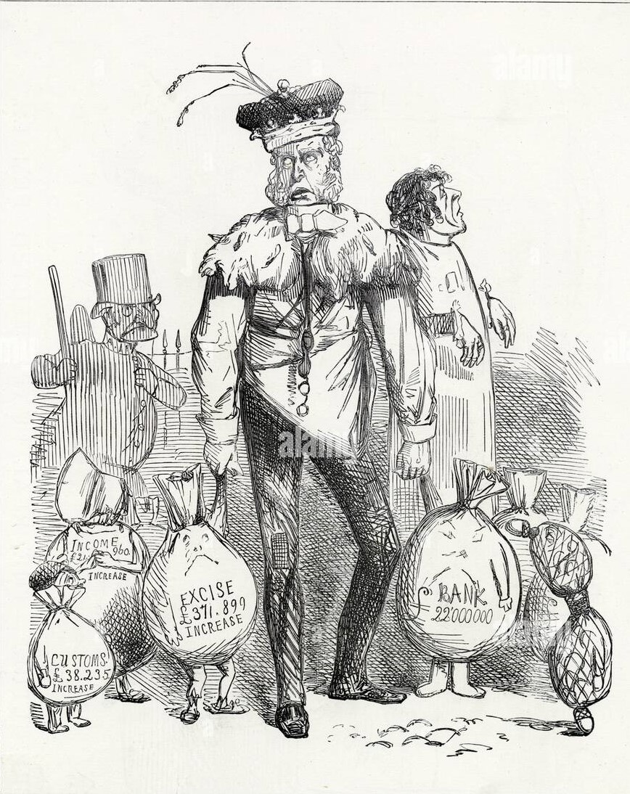
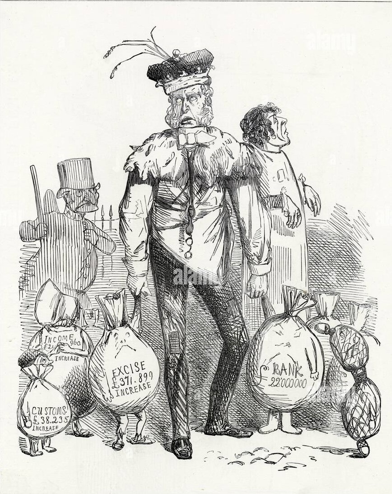
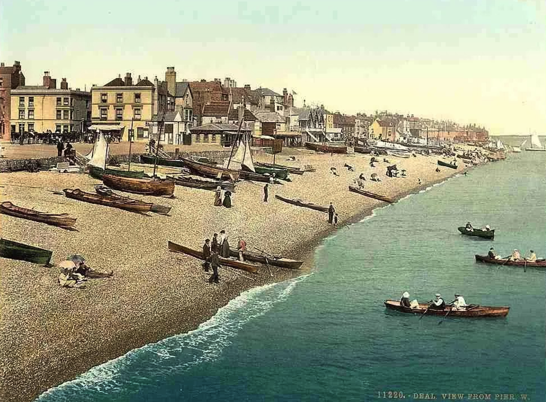

La popolazione Europea torna a crescere a partire dagli ultimi decenni del seicento,
dopo un
 periodo di calo, la popolazione europea
ricomincia gradualmente ad aumentare
periodo di calo, la popolazione europea
ricomincia gradualmente ad aumentare
Nel periodo intorno al 1800, la popolazione dell'Inghilterra
ebbe un aumento significativo. Prima del 1750, la popolazione inglese era stimata intorno ai
5-6 milioni, ma durante il XIX secolo, la popolazione crebbe rapidamente. Ad esempio, nel 1800,
la popolazione era di circa 9 milioni, e entro il 1850 aveva già superato
i 20 milioni. La crescita demografica divenne più intensa soprattutto nella
seconda parte del XVIII secolo,
ma non fu omogenea. In quel periodo, per esempio, fu particolarmente impetuosa in Inghilterra
rispetto agli altri paesi dell’europa.
L’agricoltura inglese è all’avanguardia All'inizio del Settecento  l'Inghilterra era il Paese
più ricco d'Europa. Gran parte della sua ricchezza proveniva dall'agricoltura. I nuovi
proprietari cercavano di rendere l'agricoltura sempre più moderna e produttiva. A partire
dal Settecento gli agricoltori inglesi e europei adottarono il sistema più vantaggioso rispetto
alla rotazione triennale: la rotazione quadriennale.

l'Inghilterra era il Paese
più ricco d'Europa. Gran parte della sua ricchezza proveniva dall'agricoltura. I nuovi
proprietari cercavano di rendere l'agricoltura sempre più moderna e produttiva. A partire
dal Settecento gli agricoltori inglesi e europei adottarono il sistema più vantaggioso rispetto
alla rotazione triennale: la rotazione quadriennale.

I nobili diventarono degli imprenditori A differenza di altri nobili europei i nobili inglesi
lavoravano e si trasformarono in
imprenditori dunque investono il loro
Si riferisce ai mezzi di pagamento o alle risorse finanziarie possedute
da un individuo, un'azienda o una nazione. Questo può includere denaro, azioni, obbligazioni,
investimenti immobiliari, ecc.
capitale(ovvero soldi)per
esempio: finanziano la costruzione di nuove strade e canali navigabili ecc.

La ricchezza dell’Inghilterra è legata anche ai commerci Nel settecento l’Inghilterra aveva
il dominio
sugli oceani e
aveva ottenuto anche ilè il diritto esclusivo di comerciare
un prodotto, senza concorrenti ovvero avere il il controllo esclusivo su un mercato, determinando
prezzi e produzione. Può portare a profitti elevati, ma anche a mancanza di concorrenza e
possibili abusi. monopolio sulla
tratta degli schiavi con le
colonie spagnole. Questo assicurava rifornimenti economici di materie prime provenienti dalle
colonie (legno, zucchero, cotone), sia la possibilità di vendere quei prodotti che nelle colonie
erano necessari ma che, per legge, potevano essere venduti solo alla madrepatria. La domanda di
Tessuti, abbigliamento, utensili domestici, mobili, giocattoli e prodotti alimentari confezionati. beni di consumo
stava aumentando: man mano che la popolazione cresceva.

Il sistema del lavoro a domicilio non bastava più La trasformazione delle materie prime in
prodotti finiti veniva fatta dagli
Gli artigiani erano maestri specializzati nella produzione manuale di beni, operando in settori
come legno, metallo o tessitura. La loro abilità era tramandata di generazione in generazione. artigiani (principalmente le famiglie) che lavoravano a loro proprietà ed era il mercante
a trasportare le materie prime e prodotti finiti. Il trasporto era molto pericoloso e aveva dei
tempi e costi elevati.


L’Industria tessile si innova con efficaci invenzioni Fu proprio questa necessità
a stimolare il succedersi di piccole e gradndi invenzione. La innovazione più importante
fu la navetta volante (data da John Kay) che
era 20 volte più veloce in confronto alle mani ed ha rivoluzionato il campo tessile.


Carbone, acqua e vapore muovono le nuove macchine Per azionare i nuovi grandi macchinari non era sufficiente
la forza manuale quindi era necessario una nuova forma di energia come  l’energia idraulica ma che ebbe uno svantaggio
che gli stabilimenti dovevano essere accanto a torrenti e a salti d’acqua. Si tentò allora di sfruttare il vapore con
la macchina a vapore che per farla funzionare bisognava bruciare il carbone e far bollire l’acqua di una caldaia e
produrre del vapore in pressione:l’energia termica che poi dopo veniva trasformata in energia meccanica.
SuccessivamenteJames Watt(1736-1819) è stato un famoso ingegnere scozzese. È noto per
il suo miglioramento del motore a vapore, fondamentale per la rivoluzione industriale, che ha trasformato l'industria
e la società.
James Watt la perfezionò, rendendola più efficiente e molto più economica.
l’energia idraulica ma che ebbe uno svantaggio
che gli stabilimenti dovevano essere accanto a torrenti e a salti d’acqua. Si tentò allora di sfruttare il vapore con
la macchina a vapore che per farla funzionare bisognava bruciare il carbone e far bollire l’acqua di una caldaia e
produrre del vapore in pressione:l’energia termica che poi dopo veniva trasformata in energia meccanica.
SuccessivamenteJames Watt(1736-1819) è stato un famoso ingegnere scozzese. È noto per
il suo miglioramento del motore a vapore, fondamentale per la rivoluzione industriale, che ha trasformato l'industria
e la società.
James Watt la perfezionò, rendendola più efficiente e molto più economica.
Macchine, carbone e vapore permisero uno straordinario sviluppo dell'
"Industria" indica il settore economico dedicato alla produzione di beni o servizi
attraverso processi di manifattura. Comprende diverse categorie, come la produzione
e i servizi.industria, che prese il nome di
rivoluzione industriale ed è considerata la più grande rivoluzione economica del nostro tempo. Essa ebbe
inizio in Inghilterra verso la fine del Settecento con notevole crescita demografica e conseguente aumento della domanda di beni di consumo
e la presenza del capitale da investire.
La rivoluzione industriale portò con sè le conseguenze sia sociali
che ambientali per maggior informazioni premi qui